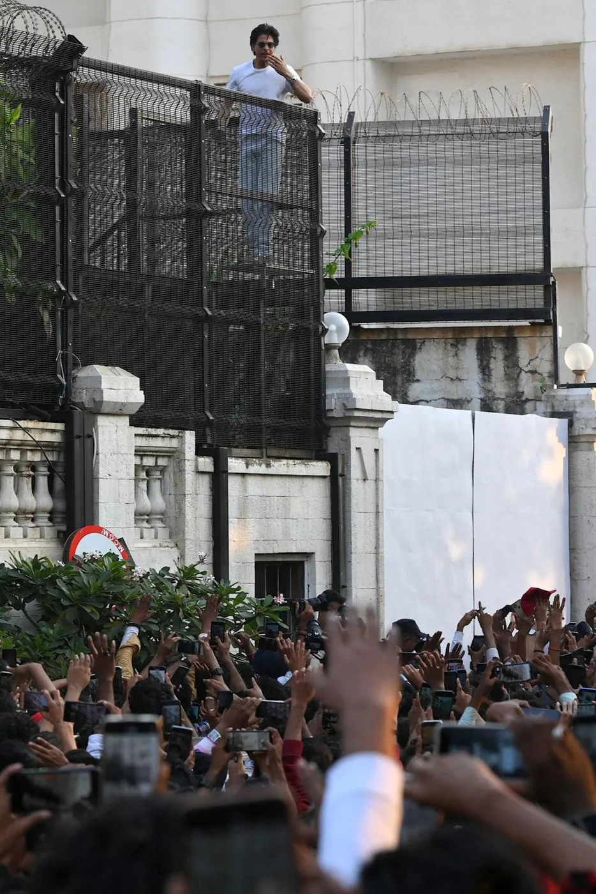

Part VIII · KING: The Royal Flush · 43 of 57
Chapter 41 · FAN Becomes the Fire
The official campaign has barely started. The fans are already running it. (Analysis)

KING Buzz. (The campaign's art, agarmainkinghota.com)
| Measure (the campaign’s KING Buzz tracker) | 4 Oct 2026 (baseline) | 5 Oct 2026 |
|---|---|---|
| Observable KING posts | 699,000 | 742,400 |
| Views across tracked KING videos | 31.18 million | 38.72 million |
| Views on the top KING video | 12.97 million | 16.21 million |
(Fact: the campaign’s KING Buzz daily ledger, against the locked 4 October 2026 baseline. Posts are not people; views are not unique fans.) In one day, 43,400 new posts and about 7.5 million new views, with no official campaign behind them. (Fact, arithmetic)

Fans at the gate on his birthday. (Image: Final Thesis archive)
(Proposal) In the proposed model the fan is no longer only the audience or the consumer. Fans become storytellers, meme-makers, game creators, campaign designers and the distributors of the universe. The pawn lights the fire; the fan is the fire. In 1995 an audience kept a film running at one Mumbai cinema for a quarter of a century. In 2013 it moved a train. In 2026 it can build the world. (Analysis)